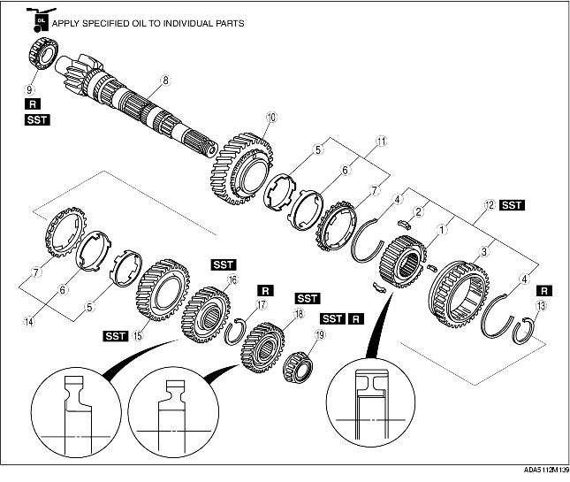
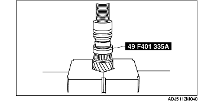
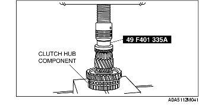
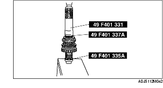
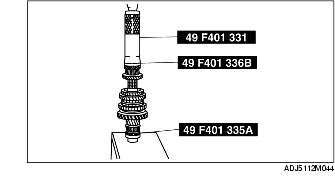
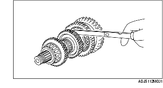

Secondary shaft components assembly
1. Assemble in the order shown in the figure.

1st/2nd Clutch Hub Assembly Note
1. Install the synchronizer key springs in the clutch hub with the hooks in the grooves to hold the three synchronizer keys in place.


Bearing (Secondary Shaft End) Assembly Note
1. Install the new bearing using the SST.

1st Gear, 1st Synchronizer Ring, and 1st/2nd Clutch Hub Component Assembly Note
1. Assemble the 1st gear, 1st synchronizer ring, inner cone, double cone and 1st/2nd clutch hub component, as shown in the figure.
2. Press the 1st/2nd clutch hub component on using the SST.

2nd Synchronizer Ring, 2nd Gear, and Secondary 3rd Gear Assembly Note
1. Install the 2nd synchronizer ring and 2nd gear.
2. Install the secondary 3rd gear using the SSTs.

Secondary 4th Gear and Bearing Assembly Note
1. Install the secondary 4th gear and the bearing using the SSTs.

2. Measure the clearance between the 1st gear and the differential drive gear.

3. Measure the clearance between the 2nd gear and the secondary 3rd gear.
